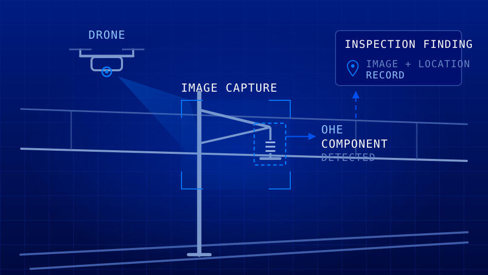

SKY QUANTECH AI combines artificial intelligence, software engineering and automation to help organizations turn complex challenges into practical digital solutions.
SKY QUANTECH AI is a technology company focused on helping organizations explore and apply artificial intelligence, software and automation to real-world business challenges.
Our approach combines technology capabilities with an understanding of practical business requirements, allowing solutions to be shaped around the needs of each organization.
Rather than introducing unnecessary technical complexity, we emphasize dependable execution, clear maintainable design, and practical digital initiatives that support genuine operational goals.
One approach, different technologies. The right solution starts with understanding the problem. Technology is selected and applied according to the requirements of the organization.
From railway infrastructure to rolling stock and power-grid assets, AI and computer vision can help transform visual inspection into structured digital intelligence.
